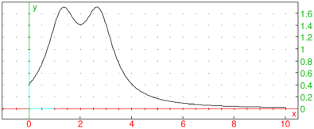
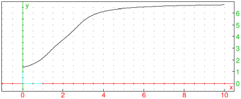
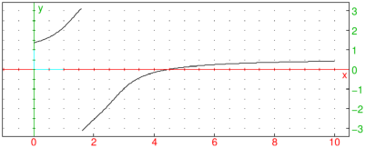

20.4.10 Discrete wavelet transform
The dwt and
idwt commands are used for computing the discrete
wavelet transform (DWT) of a signal and for computing the inverse transformation,
i.e. reconstructing the original signal from the transform. These commands require
the GSL library.
-
dwt and idwt both take one mandatory argument and up to four
optional arguments (the order of optional arguments is irrelevant):
-
data, a numeric vector of length n or matrix with dimensions m× n.
- Optionally, "wtype",
a string which defines the wavelet family.
Supported values of wtype are:
daubechies (the default), haar and bspline.
- Optionally, k, a positive integer which selects the specified member of
the wavelet family. For the Daubechies wavelet family, k∈{4,8,…,20} (even numbers).
For the Haar wavelet, only k=2 is supported. For the biorthogonal B-spline wavelet family,
the implemented values of k are 103, 105, 202, 204, 206, 208, 301, 303, 305 307 and 309.
By default, k=4 is selected for the Daubechies wavelet, k=2 for the Haar wavelet and
k=103 for the B-spline wavelet.
- Optionally, center, the symbol which makes use of the centered forms
of the wavelets which align the coefficients of the various sub-bands on edges,
making the resulting visualization of the coefficients of the wavelet transform in the
phase plane easier to understand.
- Optionally, image, the symbol which specifies the “non-standard”
form of the 2D DWT.
Note that the input array data will be enlarged, if necessary, such that its size
is a power of two. If data is a matrix, it is augmented to a square matrix of
size equal to the first power of 2 not smaller than max{m,n}.
Input data is extended by zero-padding.
- If data is a vector, then
dwt(data ⟨,options ⟩)
returns the list of length n which
contains the DWT of the signal data, packed in a triangular storage layout:
⎛
⎝ | s−1,0,d0,0,d1,0,d1,1,d2,0,d2,1,d2,2,…,di,j,…,dN−1,2N−1−1 | ⎞
⎠ | , |
where i=0,…,N−1 is the level index, j=0,…,2i−1 is the index of the
coefficient within each level, and N=log2(n). The first element s−1,0 is the
smoothing coefficient, which is followed by detail coefficients di,j for each level i.
- If data is a matrix, then the “non-standard” two-dimensional DWT is performed in interleaved
passes on the rows and columns for each level of the transform. The non-standard
form of DWT is typically used in image analysis. By default, the “standard” form is used,
which performs a complete DWT on the rows of the matrix, followed by a separate complete
DWT on the columns of the resulting row-transformed matrix.
- idwt takes the DWT and returns the original data. The
data parameter may be modified prior to calling idwt for the sake
of e.g. signal smoothing or data compression.
Examples
Signal compression.
In the first example (adapted from GSL documentation), we load a sample of size 256 from the
MIT-BIH Arrhythmia Database (see here)
and attempt to remove the noisy information.
| data:=mid(col(csv2gen("/home/luka/Documents/MIT-BIH.csv","\t"),2),300,256):;
listplot(data) |

Now we transform the signal by using dwt and select the 20 largest components.
We set other elements to zero and transform the result back using idwt.
| tdata:=dwt(data):;
p:=reverse(sortperm(abs(tdata))):;
for k from 20 to 255 do tdata[p[k]]:=0; od:;
res:=idwt(tdata):;
listplot(res) |

As you can see, the fast, low-amplitude oscillations are gone,
but important features such as the spike are left practically intact.
As a beneficial side-effect of denoising, you get the signal compressed
by, in this case, about 92% in terms of memory usage.
Noise reduction in images.
Assuming that an image noisy.jpg is stored in Pictures
folder, enter:
| img:=image("/home/luka/Pictures/noisy.jpg")(grey) |
|
| |
an image of size 300×300 (grayscale)
| | | | | | | | | | |
|
Use DWT to transform the image matrix and subsequently replace each component smaller
than 55 (by absolute value) in the resulting matrix to zero, before transforming
it back to obtain a noise-reduced image. (The threshold value was obtained by
trial and error.) Note that dwt enlarges the input matrix to the size
512× 512, so be sure to crop the output of idwt back to 300× 300.
To make sure that no component gets below zero or above 255,
use the threshold command (see Section 20.3.4).
| tdata:=dwt(img[0],image):;
sdata:=threshold(tdata,55.0=0,'<=',abs=true):;
nr:=image(1,threshold(round(subMat(idwt(sdata,image),0,0,299,299)),[0,255])) |
|
| |
an image of size 300×300 (grayscale)
| | | | | | | | | | |
|
To display the original image and the processed image next to each other for comparison, enter:
| display(img,0); display(nr,320);
legend(-20i,"original"); legend(320-20i,"denoised") |
